A legfontosabb a hobbijaim közül a lovaglás. Már régóta csinálom és mindig is nagyon élveztem.
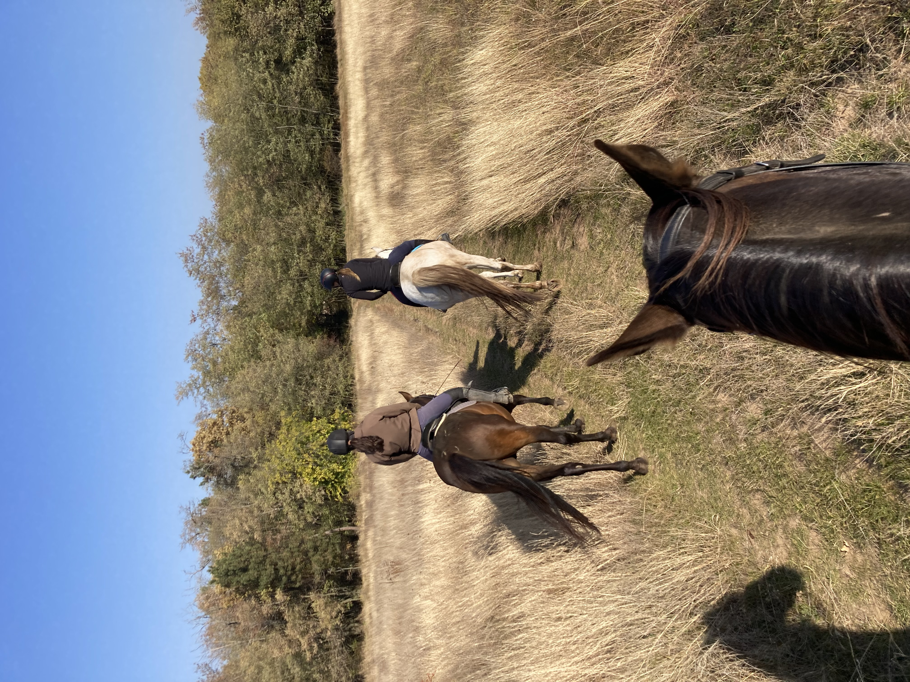 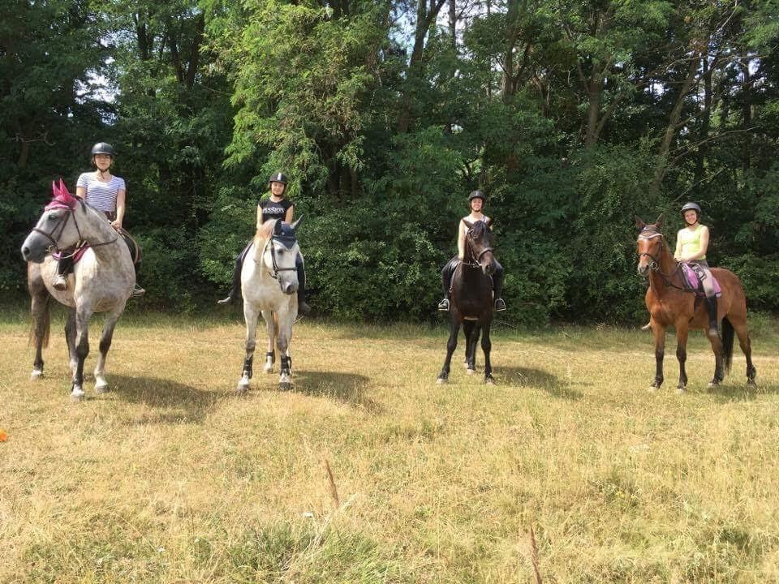 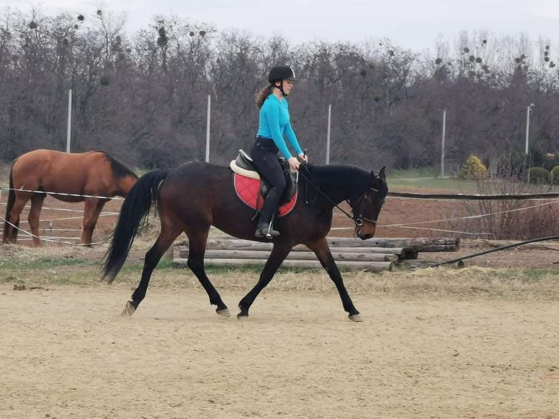 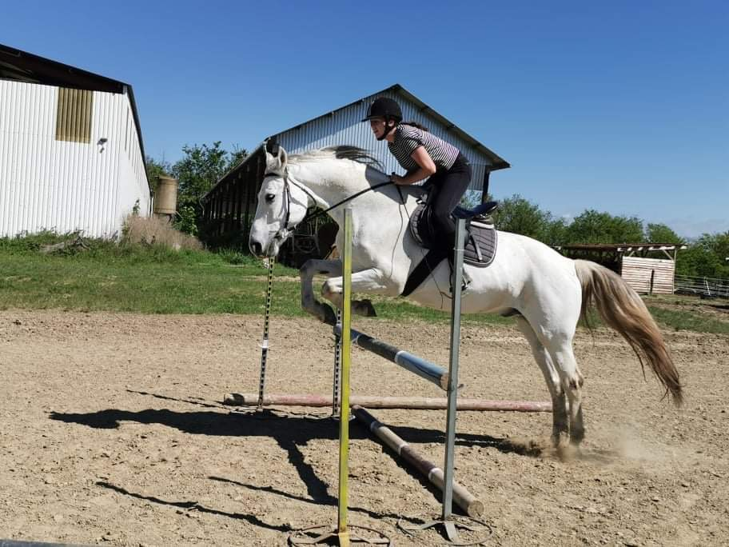

A legfontosabb a hobbijaim közül a lovaglás. Már régóta csinálom és mindig is nagyon élveztem.
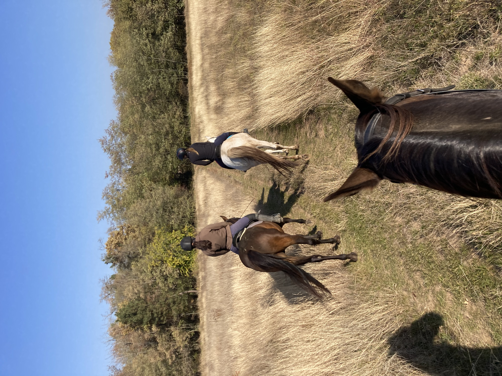 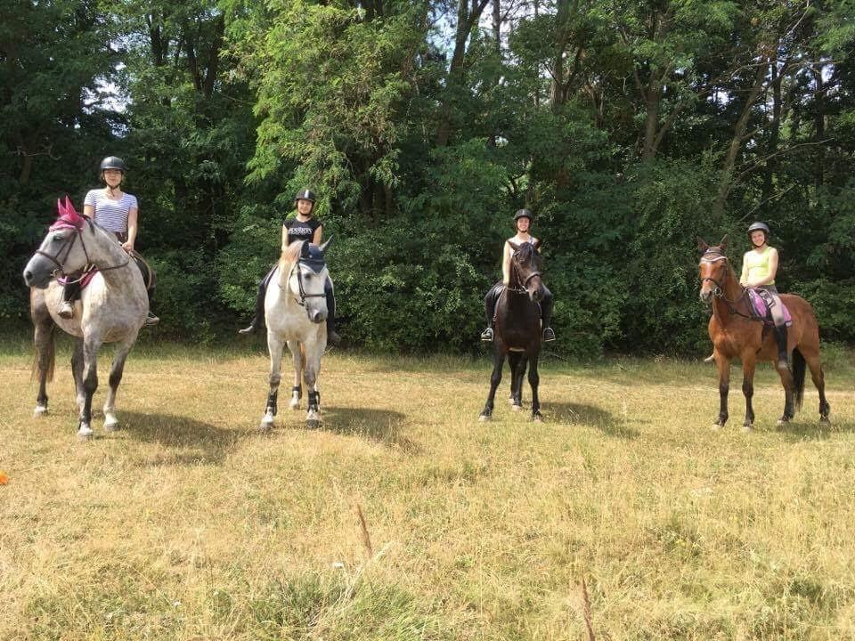 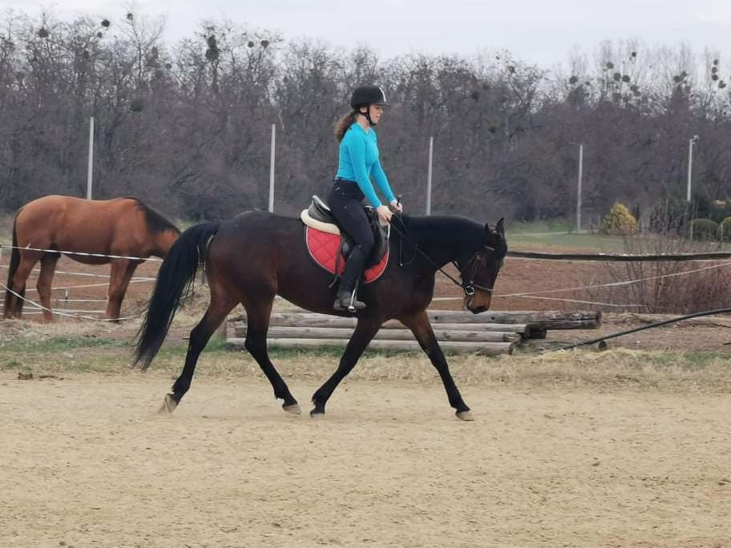 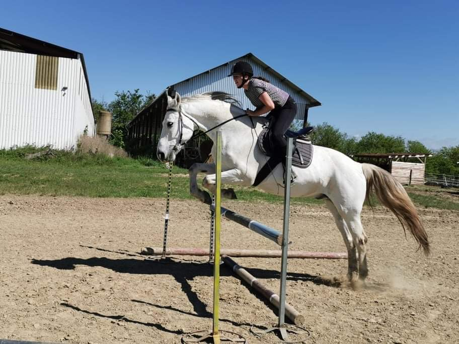
Egy másik hobbim az olvasás. Egyetem mellett persze kevesebb időm van, de próbálok erre is időt szakítani. Szeretném minden évben növelni, hogy hány könyvet olvastam el.
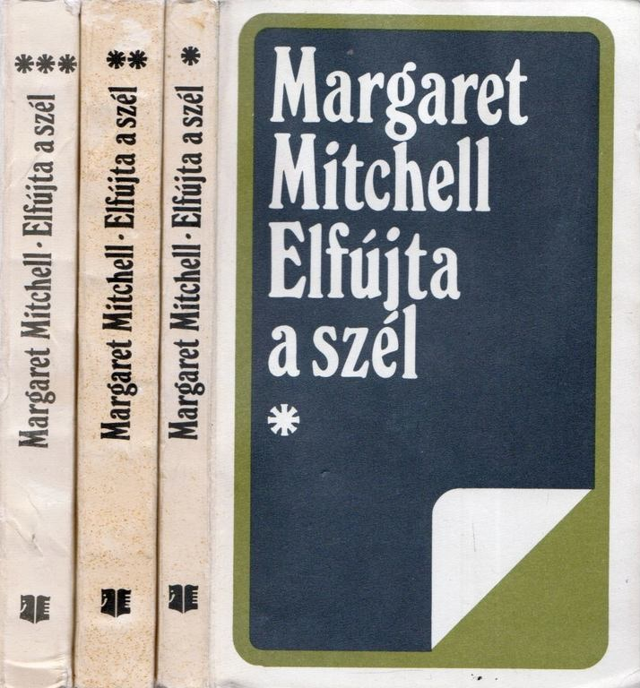 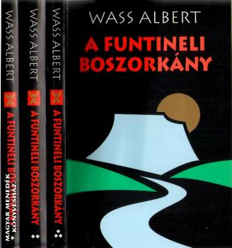 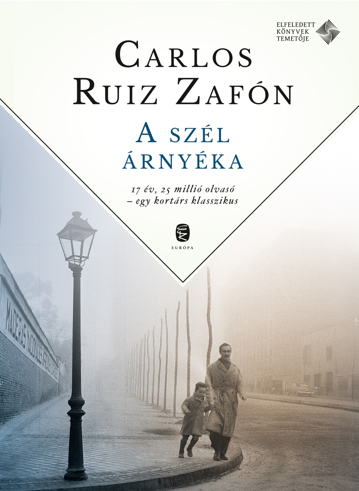 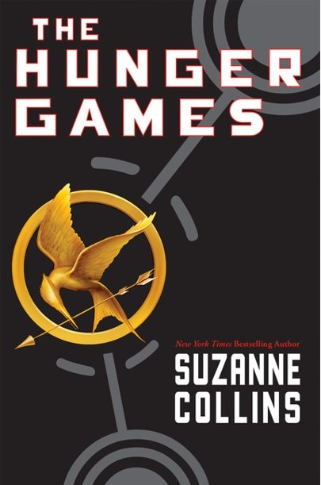Ezeken kívül síelni is nagyon szeretek. Ezt sajnos tavaly a járványhelyzet miatt nem tudtam megtenni, így nagyon remélem, hogy idén el tudunk menni.